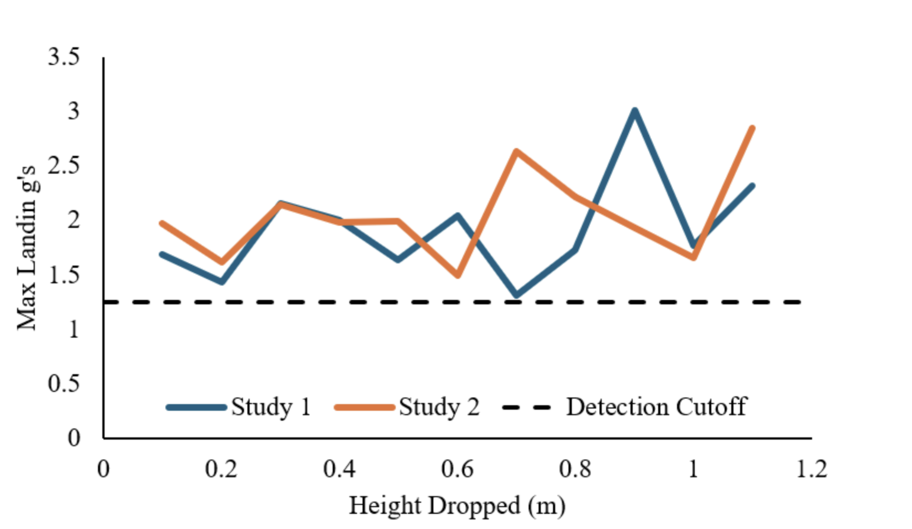

For this mechatronics project I designed and built a strain-based landing detection system
for the Vanderbilt Aerospace Design Lab (VADL) payload. The goal was to replace fragile timing-based
logic and unreliable embedded sensors with a robust, physics-based measurement of payload–ground
interaction at touchdown. [oai_citation:0‡FINAL PROJECT_ MECHATRONICS-JACK LIEDEL (2).pdf](sediment://file_00000000c8b871f5aca98fd19744fa35)
The system uses a half-bridge strain gauge bonded to an aluminum landing leg, an
EMBSGB200 amplifier, and an Arduino R4 Uno to compute strain, landing
force, and peak G-loads in real time. When the measured G-load exceeds a threshold, the software
both logs the event and actuates a servo to deploy an RF antenna.
Prototype payload with aluminum landing leg instrumented with a half-bridge strain gauge and onboard
mechatronics for landing detection.
System Overview
VADL’s previous payload relied on timing logic and on-board accelerometers for landing detection,
which created the risk of premature mid-air parachute detachment. To mitigate that
failure mode, I proposed a system that senses landing directly through flexure of the payload’s landing
legs.
A 6061-T6 aluminum leg is instrumented with a half-bridge strain gauge circuit. The bridge output is
amplified, digitized by the Arduino, and converted into strain, tip force, and G-loads. When G-loads
exceed a programmable threshold (1.2 G), the microcontroller declares landing, latches the peak value
to an LCD voltmeter, and triggers a servo-deployed RF antenna.
Hardware & Electronics
I built a complete prototype payload to avoid interfering with flight hardware while still
matching its geometry and loading paths. The design includes fiberglass airframe, green ABS bulkplates,
aluminum support rods, an ABS electronics bay, and a 6061 landing leg sized for measurable elastic
deflection.
Landing leg: 6061 aluminum chosen for its lower modulus vs 7075, increasing measurable deflection.
Half-bridge strain gauges: provide thermal compensation, higher sensitivity, and better noise rejection than a quarter bridge.
EMBSGB200 amplifier: flight-proven hardware used in previous VADL missions, configured for high gain and low noise.
Arduino R4 Uno: configured for ≈9 kHz sampling to capture the short impulse at impact.
LCD voltmeter: displays peak landing G-load via PWM output from the Arduino.
MG90S servo + RF antenna: small, flight-heritage servo used to rotate a metallic antenna strip into transmit position.
EMBSGB200 strain gauge amplifier wired to the half-bridge and Arduino during early bench tests.
ABS electronics bay housing the Arduino R4, amplifier, servo connections, and voltmeter wiring.
CAD drawing of the ABS bulkplates used to mount landing legs and tie into the fiberglass airframe.
Software & Control Logic
The embedded software is written in Arduino C/C++ and builds on course concepts such as analog
sampling, PWM, servo control, and bridge-circuit strain calculations.
Continuously samples the amplified bridge voltage and converts it to microstrain using the gauge factor and bridge equations.
Maps strain to tip force and then to equivalent G-loads using beam theory and payload weight.
Tracks and stores the peak G-load observed during each impact event.
Declares landing when G exceeds 1.2 G and allows several additional cycles to capture the true peak.
Commands the servo to 70° to deploy the RF antenna once landing is confirmed.
Outputs live G-load as a PWM-encoded voltage to the LCD voltmeter, then freezes at the peak value post-landing.
Mechanical Design, Manufacturing & Assembly
All structural components of the prototype payload were designed in CAD and manufactured in-house
using a mixture of 3D printing and shop tooling.
Bulkplates and electronics bay printed in ABS with integrated mounts for rods, legs, and electronics.
Fiberglass tube cut to length and bonded to bulkplates to reproduce flight-like geometry.
Strain gauges bonded and wired using precision 120 Ω resistors to form the half-bridge.
Electronics bay assembled and wired for rapid swap of amplifiers, microcontrollers, and power.
Completed prototype payload with fiberglass airframe, ABS bulkplates, and instrumented landing leg.
Calibration setup: known weights applied to the leg while monitoring strain and voltage to derive the
force–voltage relationship.
Testing & Results
I ran multiple drop-test campaigns to characterize the system response: horizontal drops for control,
30°-angle drops to mimic realistic landings, and repeated drops from fixed height to evaluate precision.
Earlier low-frequency code produced noisy correlations between drop height and G-load.
After optimizing sampling to ≈9 kHz, drops from 0–40 cm showed a strong linear relationship
(R² ≈ 0.995) between height and peak G’s, validating the strain-based model.
Saturation at higher heights was traced to the amplifier gain and 5 V ADC limit, suggesting future
work with higher-range ADC hardware.
A histogram of repeated 1.2 m drops revealed the expected spread in G-loads, driven largely by
impact dynamics and earlier lower sample rates.

Max G-load vs drop height showing a linear region before saturation due to ADC voltage limits.
Outdoor test stand with ruler and foam pad used to standardize drop height and simulate soil/grass
landing conditions.
Impact & Future Work
This project demonstrates a practical, flight-ready approach to landing detection that directly measures
leg flexure instead of relying on noisy accelerometers or timing logic. With minor modifications, the system
could be integrated into future VADL payloads to reduce the risk of premature parachute detachment.
Recommended next steps include integrating a higher-range external ADC, extending drop testing to a
wider height range, and porting the logic to a higher-resolution flight microcontroller to further improve
accuracy and robustness.
Full Mechatronics Report
Landing Detection via Strain-Gauge Instrumented Landing Leg
Full mechatronics final report with system modeling, circuit design, embedded code, calibration
procedures, and experimental results.
 2.png)